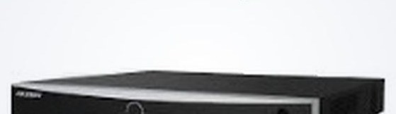

كل المنتجات ← كاميرات وأجهزة هيكفيجن
الموديل: DS-7716NXI-K4

| الماركة | هيكفيجن |
|---|---|
| الموديل | DS-7716NXI-K4 |
| نوع المنتج | جهاز تسجيل NVR |
| التحليلات الذكية | |
| تحليلات ذكية بالجهاز | Facial recognition, perimeter protection, motion detection 2.0 |
| تحليلات ذكية بالكاميرا | Facial recognition, perimeter protection, throwing objects from building, motion detection2.0, ANPR, VCA |
| الحماية المحيطية | |
| By Device | 2-ch, 4 MP (HD network camera, H.264/H.265) video analysis for human and vehicle recognition to reduce false alarm |
| By Camera | All channels |
| التعرف على الأهداف | |
| Facial Detection and Analytics | Face picture comparison, human face capture, face picture search |
| Face Picture Library | Up to 16 face picture libraries, with up to 20,000 face pictures in total (each picture ≤ 4 MB, total capacity ≤ 1 GB) |
| Facial Detection and Analytics Performance | 1-ch, 8 MP |
| Face Picture Comparison | 4-ch |
| كشف الحركة 2.0 | |
| By Camera | All channels |
| الفيديو والصوت | |
| مدخلات فيديو IP | 16-ch |
| النطاق الوارد | 160 Mbps |
| النطاق الصادر | 160 Mbps |
| مخرج HDMI | 1-ch, 4K (3840 × 2160)/30Hz, 2K (2560 × 1440)/60Hz, 1920 × 1080/60Hz, 1600 × 1200/60Hz, 1280 × 1024/60Hz, 1280 × 720/60Hz, 1024 × 768/60Hz |
| مخرج VGA | 1-ch, 1920 × 1080/60Hz, 1280 × 1024/60Hz, 1280 × 720/60Hz |
| وضع إخراج الفيديو | HDMI/VGA independent output |
| مخرج CVBS | N/A |
| مخرج الصوت | 1-ch, RCA (Linear, 1 KΩ) |
| صوت ثنائي الاتجاه | 1-ch, RCA (2.0 Vp-p, 1 KΩ, using the audio input ) |
| فك الترميز | |
| Decoding Format | H.265/H.265+/H.264+/H.264 |
| Recording Resolution | 12 MP/8 MP/6 MP/5 MP/4 MP/3 MP/1080p/UXGA/ 720p/VGA/4CIF/DCIF/2CIF/CIF/QCIF |
| Synchronous playback | 16-ch |
| Decoding Capability | AI on: 2-ch@12 MP (30 fps)/3-ch@8 MP (30 fps)/6-ch@4 MP (30 fps)/12-ch@1080p (30 fps) AI off: 2-ch@12 MP (30 fps)/4-ch@8 MP (30 fps)/8-ch@4 MP (30 fps)/16-ch@1080p (30 fps) Smooth Playback (HC) ON & AI ON: 1-ch@12 MP (30 fps)/2-ch@8 MP (30 fps)/5-ch@4 MP (30 fps)/11-ch@1080p (30 fps) Smooth Playback (HC) ON & AI OFF: 2-ch@12 MP (30 fps)/3-ch@8 MP (30 fps)/7-ch@4 MP (30 fps)/15-ch@1080p (30 fps) |
| Stream Type | Video, Video & Audio |
| Audio Compression | G.711ulaw/G.711alaw/G.722/G.726/AAC |
| الشبكة | |
| Remote Connection | 128 |
| API | ONVIF (profile S/G); SDK; ISAPI |
| Compatible Browser | IE11, Chrome V57, Firefox V52, Safari V12, Edge V89, or above version |
| Network Protocol | TCP/IP, DHCP, IPv4, IPv6, DNS, DDNS, NTP, RTSP, SADP, SMTP, SNMP, NFS, iSCSI, ISUP, UPnP™, HTTP, HTTPS |
| Network Interface | 2 RJ-45 10/100/1000 Mbps self-adaptive Ethernet interfaces |
| الواجهات المساعدة | |
| SATA | 4 SATA interfaces |
| Capacity | Up to 16 TB capacity for each HDD |
| Serial Interface | 2 RS-485 (half-duplex), 1 RS-232 |
| Alarm In/Out | 16/9;16/4 |
| USB Interface | Front panel: 2 × USB 2.0; Rear panel: 1 × USB 3.0 |
| Ctrl 12V | N/A (optional to support) |
| DC 12V | N/A (optional to support) |
| عام | |
| GUI Language | English, Russian, Bulgarian, Hungarian, Greek, German, Italian, Czech, Slovak, French, Polish, Dutch, Portuguese, Spanish, Romanian, Turkish, Japanese, Danish, Swedish Language, Norwegian, Finnish, Korean, Traditional Chinese, Thai, Estonian, Vietnamese, Croatian, Slovenian, Serbian, Latvian, Lithuanian, Uzbek, Kazakh, Arabic, Ukrainian, Kyrgyz , Brazilian Portuguese, Indonesian |
| مصدر الطاقة | 100 to 240 VAC, 50 to 60Hz |
| Consumption | ≤ 20 W (without HDD) |
| حرارة العمل | -10 °C to 55 °C (14 °F to 131 °F) |
| Working Humidity | 10 to 90 % |
| Dimension (W × D × H) | 445 × 400 × 75 mm ( 17.5"× 15.7" × 3.0") |
| Certification | |
| CE | EN 55032: 2015, EN 61000-3-2, EN 61000-3-3, EN 50130-4, EN 55035: 2017 |
| Obtained Certification | CE, FCC, IC, CB, KC, UL, Rohs, Reach, WEEE, RCM, UKCA, LOA, BIS |